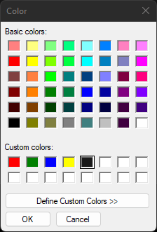
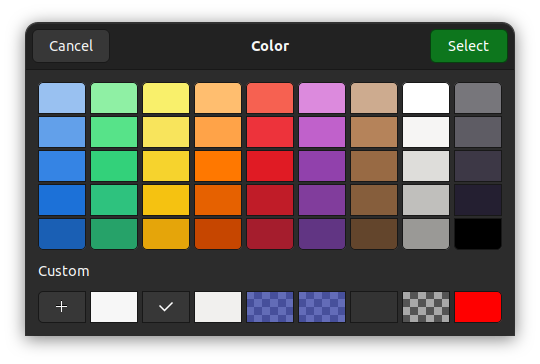

|
xtd
0.2.0
|
Loading...
Searching...
No Matches
color_dialog.cpp
demonstrates the use of xtd::forms::color_dialog dialog.
- Windows


- macOS


- Gnome


#include <xtd/drawing/drawing_2d/hatch_brush>
#include <xtd/drawing/color_translator>
#include <xtd/drawing/system_colors>
#include <xtd/forms/application>
#include <xtd/forms/button>
#include <xtd/forms/color_dialog>
#include <xtd/forms/control_paint>
#include <xtd/forms/form>
#include <xtd/forms/label>
#include <xtd/forms/panel>
using namespace xtd;
using namespace xtd::drawing;
using namespace xtd::drawing::drawing_2d;
using namespace xtd::forms;
public:
form1() {
text("Color dialog example");
button1.click += [&] {
dialog.color(selected_color);
dialog.custom_colors(custom_colors);
if (dialog.show_dialog(*this) == forms::dialog_result::ok) {
selected_color = dialog.color();
color_label.text(color_translator::to_html(selected_color));
test_zone.invalidate();
}
custom_colors = dialog.custom_colors();
};
test_zone.border_style(border_style::inset).double_buffered(true);
e.graphics().fill_rectangle(hatch_brush {hatch_style::wide_checker_board, color::from_argb(0x66, 0x66, 0x66), color::from_argb(0x99, 0x99, 0x99)}, e.clip_rectangle());
e.graphics().fill_rectangle(solid_brush {selected_color}, e.clip_rectangle());
control_paint::draw_border(test_zone, e.graphics(), test_zone.border_style(), test_zone.border_sides(), application::style_sheet().system_colors().control_text(), e.clip_rectangle());
};
color_label.auto_size(true);
}
private:
color selected_color = system_colors::control();
color_dialog::colors custom_colors = {color::red, color::green, color::blue, color::yellow, system_colors::control()};
};
auto main()->int {
application::run(form1 {});
}
Defines a rectangular xtd::drawing::brush with a hatch style, a foreground color, and a background co...
Definition hatch_brush.h:32
Defines a xtd::drawing::brush of a single color. Brushes are used to fill graphics shapes,...
Definition solid_brush.h:30
Represents a common dialog box that displays available colors along with controls that enable the use...
Definition color_dialog.h:32
std::vector< xtd::drawing::color > colors
Represents an xtd::drawing::color array.
Definition color_dialog.h:37
drawing::color color() const noexcept
Gets the color selected by the user.
Represents a window or dialog box that makes up an application's user interface.
Definition form.h:52
Provides data for the xtd::forms::control::paint event.
Definition paint_event_args.h:28
The xtd::drawing::drawing_2d namespace provides advanced two-dimensional and vector graphics function...
Definition compositing_mode.h:12
The xtd::drawing namespace provides access to GDI+ basic graphics functionality. More advanced functi...
Definition actions_system_images.h:11
The xtd::forms namespace contains classes for creating Windows-based applications that take full adva...
Definition xtd_about_box.h:12
The xtd namespace contains all fundamental classes to access Hardware, Os, System,...
Definition xtd_about_box.h:10
Generated on Thu Mar 14 2024 22:04:48 for xtd by Gammasoft. All rights reserved.